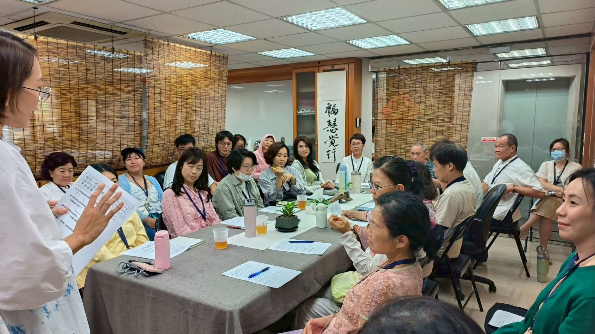
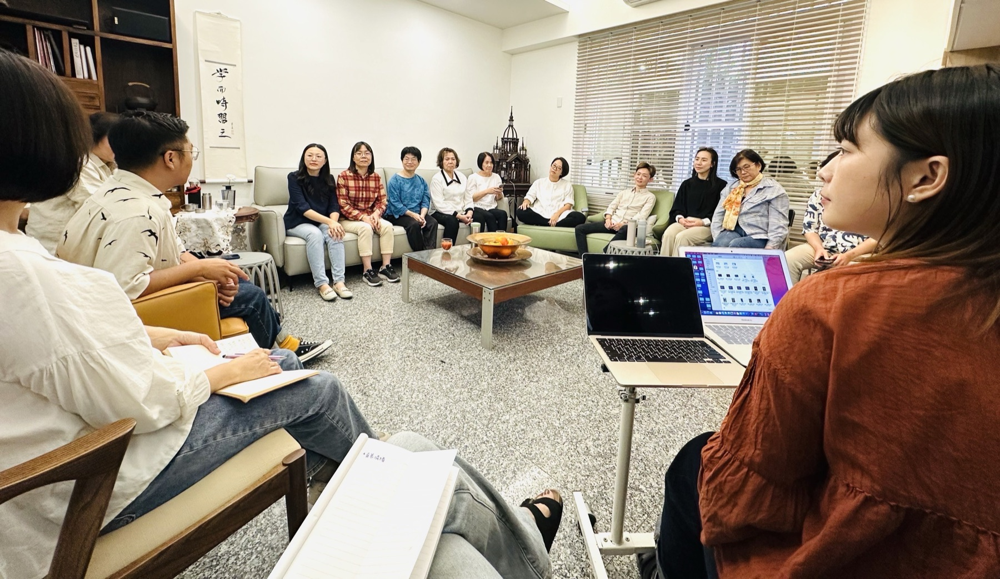
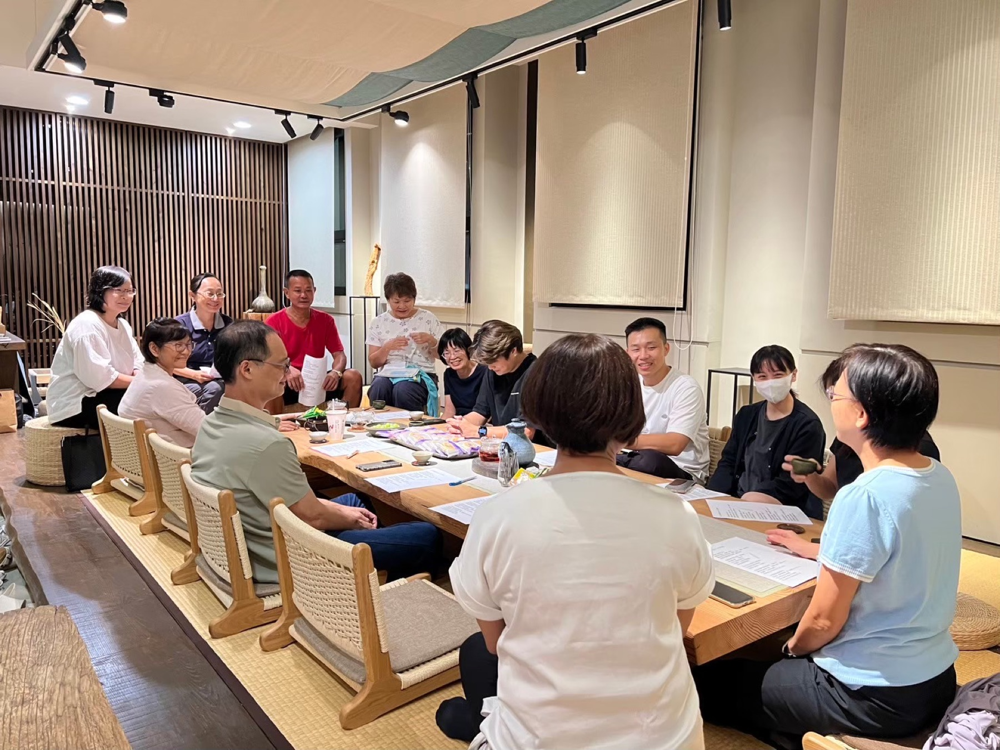
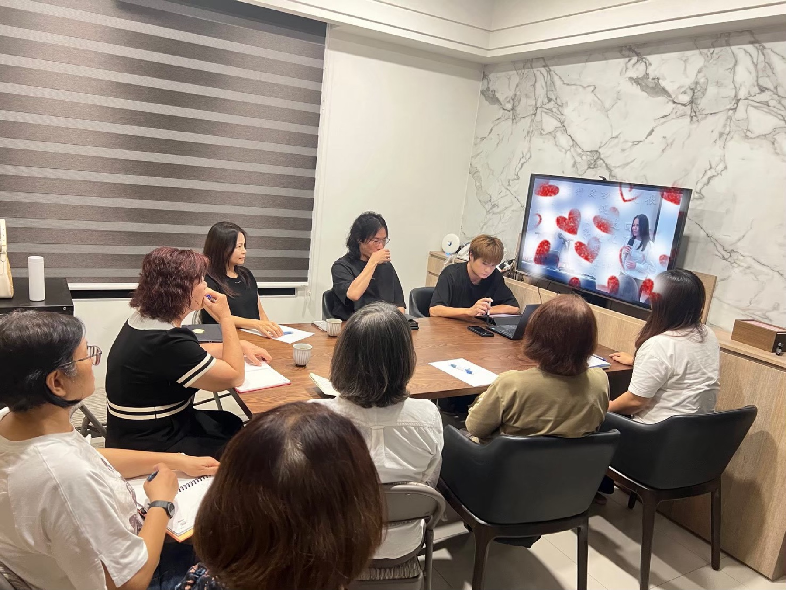
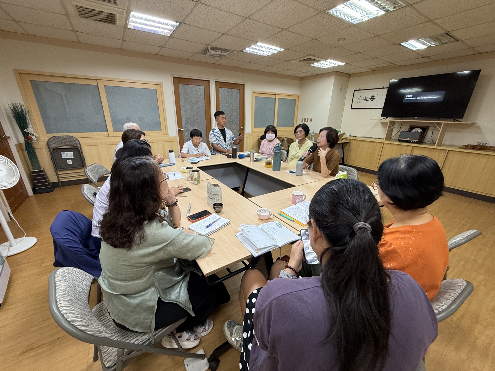

北區
Community
Learning together
昊道文化於各地設有共修據點，提供持續學習、交流分享與共同修煉的環境，讓每位學習者在課程之外，依然能穩定實踐、持續精進，不因時間與環境而中斷成長。
共修不只是一起學習，更是一份彼此陪伴、共同成長的力量。
透過研磨理法、交流分享、修煉實踐與生活驗證，將課程中的體會帶回家庭、工作與人際關係，在每一次面對生命課題時，學會觀照自己、調整自己、提升自己。
在這裡，沒有比較與競爭，而是彼此支持、彼此提醒、彼此成就。
因為生命的成長，需要時間；修煉的道路，需要同行。
我們相信，一群願意共同學習、共同修煉的人，能夠彼此照見、互相扶持，讓每一步成長都更加踏實，也讓修學真正融入日常生活與生命。
Local communities
從北到南，讓共學、共修與生命陪伴落在日常可抵達的地方。





Archive
超過今日的共修活動會自動移動到這裡，並可保留活動記錄照片和影片。